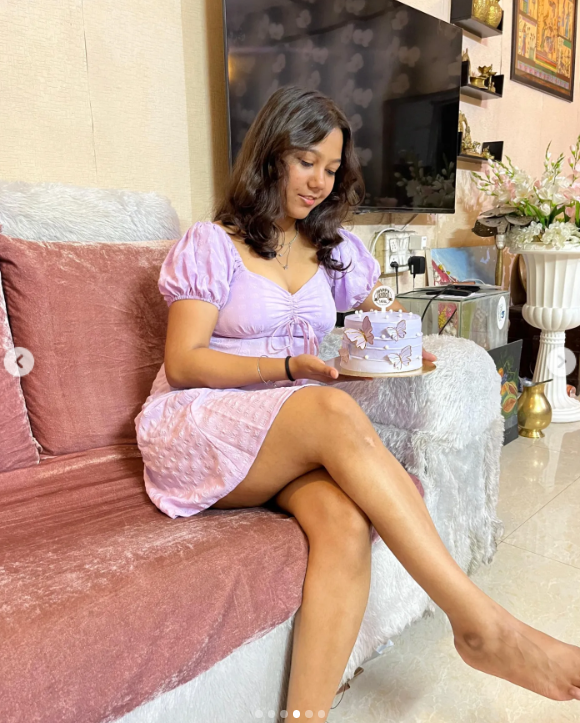

BIRTHDAY FIELD GUIDE · ARTICLE 23
How to Plan a Birthday Celebration in a Living Room
Turn a living room into a comfortable birthday gathering space with a clear focal point, open paths, conversation seating, and practical food zones.
Short answer
Start by choosing one focal area, such as the cake table or a decorated wall. Then arrange the room around people moving, sitting, eating, and talking. A few clear zones make a familiar living room feel intentional without filling every surface with decor.
Give the room a simple plan
- Choose one focal point for the cake, greeting, or photos.
- Move small furniture only if it creates a useful open area; keep heavy pieces stable.
- Arrange chairs in small conversation groups instead of lining every seat against a wall.
- Place food and drinks where guests can reach them without blocking the entrance.
- Keep a clear route between the doorway, seating, food, and restroom.
Set up the main zones
Welcome: leave room by the door for arrivals and coats. Gather: use the largest open area for conversation or the main activity. Serve: place food on a side surface, with plates and napkins easy to find. Celebrate: keep the cake visible and away from unstable edges or busy walkways.
Before guests arrive
- Check the path for loose cords, rugs that slide, and trip hazards.
- Make sure seats are stable and there is a place to set down a drink.
- Turn on the lighting you plan to use and test the music volume.
- Take one photo from the doorway to spot clutter or blocked routes.
Quick checklist
- Choose the focal area
- Keep routes between rooms open
- Create seating and serving zones
- Check lighting, music, and trip hazards
Frequently asked questions
How do I keep a living room from feeling crowded?
Limit the number of zones, keep furniture routes open, and move only the pieces that improve circulation.
Where should the cake go?
Choose a stable, visible surface away from doorways and busy paths.
See the birthday reference on Instagram
Use the post as a visual starting point, then adapt the ideas to your own celebration and space.

Open the birthday post on Instagram ↗Open the birthday post ↗Visit @_itzzzshanaya ↗Further reading
These references provide additional checklists, comparisons, and practical guidance related to this article. Confirm venue terms and local requirements directly with the responsible provider.
- The Library: How to Get Your Living Room Layout Right — Explains focal points, conversation seating, and walking clearances.
- How to Adapt Your Living Room Layout When You’re Hosting a Lot of People — Covers conversation clusters, drink stations, and flow for home gatherings.
- How to Host a Birthday Party at Home: Space, Flow and Setup — Directly maps home-party zones and off-limits rooms.
- How to Plan a Gathering in a Small Living Room — Practical tips on flexible furniture, food service, walkways, and common-space constraints.
- How to Prepare Your Home for Thanksgiving — Relevant prep on decluttering gathering areas, rearranging furniture, and entryway readiness.
- How to Plan a Birthday Party — Anecdotal home layout ideas: separate kitchen, dining, and living-room functions.
Mapped resources included: 6. No source count is presented as 50 unless the mapped list contains 50.